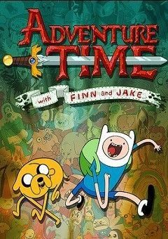

Jorge Salhani
Masters Student
Bacharela em Ciências Físicas e Biomoleculares pela USP - IFSC. Agora graduanda em Ciências da Computação pela USP - ICMC
My Favorite movies
|  |
Adventure TimeAdventure Time follows the adventures of a boy named Finn and his best friend and adoptive brother Jake — a dog with the magical power to change size and shape at will. They interact mainly with Princess Bubblegum, the Ice King, Marceline and BMO. |
Midnight GospelMidnight Gospel fixates on Clancy, a young (?) human (?) who lives in a trailer with his "used Universe Simulator," a bio-technological god computer. Clancy is played by Trussell, whose miraculous rasp sounds untraceably like a lifelong smoker cackling and a little brother's voice cracking. |
|
KipoThe young adult animated series[1] follows a girl called Kipo Oak, who is searching for her father after being forced to flee from her burrow, and must explore the post-apocalyptic surface world ruled by mutated animals to find him. Along the way she befriends human survivors Wolf and Benson, and the mutant animals Dave and Mandu. |